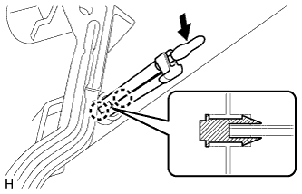
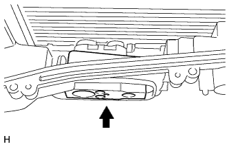
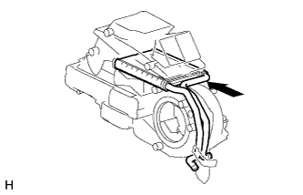
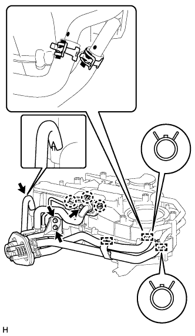
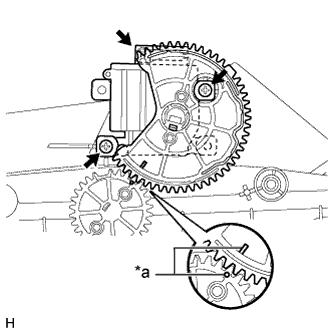
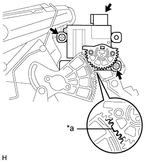

ДАТЧИК ТЕМПЕРАТУРЫ ЗАДНЕГО ИСПАРИТЕЛЯ > ПОВТОРНАЯ СБОРКА |
| 1. УСТАНОВИТЕ ДАТЧИК ТЕМПЕРАТУРЫ ЗАДНЕГО ИСПАРИТЕЛЯ |
|  |
Поверните наконечник датчика в направлении, указанном на рисунке стрелкой, чтобы установить его на пластину кронштейна.
Введите в зацепление 2 захвата, чтобы закрепить датчик.
| 2. УСТАНОВИТЕ ЗАДНИЙ ИСПАРИТЕЛЬ В СБОРЕ |
Нанесите необходимое количество компрессорного масла на 2 новых кольцевых уплотнения и пригоночную поверхность трубного соединения.
Установите 2 кольцевых уплотнения на испаритель.
Установите испаритель на правый корпус заднего кондиционера.
| 3. УСТАНОВИТЕ КЛАПАН КОМПЕНСАЦИИ РАСШИРЕНИЯ ЗАДНЕГО КОНДИЦИОНЕРА |
|  |
Установите клапан компенсации расширения.
С помощью шестигранного ключа на 4 мм вверните 2 болта с шестигранными головками.
Установите левый корпус заднего кондиционера и закрепите 12 винтами.
Введите в зацепление 3 зажима.
Введите в зацепление 2 зажима и установите жгут проводов системы кондиционирования на корпус заднего кондиционера.
| 4. УСТАНОВИТЕ КОНТРОЛЛЕР ЭЛЕКТРОДВИГАТЕЛЯ ВЕНТИЛЯТОРА |
Установите контроллер электродвигателя вентилятора и закрепите 2 винтами.
| 5. УСТАНОВИТЕ ЗАДНИЙ ВЕНТИЛЯТОР С ЭЛЕКТРОДВИГАТЕЛЕМ В СБОРЕ |
Установите задний вентилятор с электродвигателем в сборе и закрепите его 3 винтами.
| 6. УСТАНОВИТЕ КРОНШТЕЙН ОТОПИТЕЛЯ |
Установите кронштейн и закрепите его 3 винтами.
| 7. УСТАНОВИТЕ БЛОК РАДИАТОРА ОТОПИТЕЛЯ |
Введите в зацепление 2 захвата, чтобы установить хомут нагревателя.
|  |
Установите блок радиатора на задний охладитель.
Введите в зацепление захват, чтобы закрыть крышку нагревателя.
Заверните винт.
| 8. УСТАНОВИТЕ ТРУБКУ И ОБВЯЗКУ СИСТЕМЫ КОНДИЦИОНИРОВАНИЯ |
|  |
Нанесите необходимое количество компрессорного масла на 2 новых кольцевых уплотнения и пригоночную поверхность трубного соединения.
Установите 2 кольцевых уплотнения на обвязку системы кондиционирования.
Установите обвязку системы кондиционирования в сборе.
Совместите белые метки на шлангах с черными метками на трубопроводах и установите обвязку системы кондиционирования в сборе на задний кондиционер.
С помощью плоскогубцев зажмите захваты фиксаторов и сдвиньте 2 фиксатора.
Закрепите зажим.
Вверните болт и 2 винта.
Введите в зацепление 3 захвата, чтобы установить крышку.
Совместите вырез на шланге с выступом блока и подсоедините сливной шланг.
Установите новое уплотнение.
| 9. УСТАНОВИТЕ СЕРВОПРИВОД ЗАДНЕЙ ЗАСЛОНКИ РАСПРЕДЕЛЕНИЯ ПОТОКОВ ВОЗДУХА В СБОРЕ |
|  |
Выровняйте сервопривод заслонки, как показано на рисунке, и закрепите его 2 винтами.
Подсоедините разъем.
| *a | Точка совмещения |
| 10. УСТАНОВИТЕ КРОНШТЕЙН РАДИАТОРА |
Установите кронштейн и закрепите его 4 винтами.
| 11. УСТАНОВИТЕ СЕРВОПРИВОД ЗАДНЕЙ СМЕСИТЕЛЬНОЙ ЗАСЛОНКИ В СБОРЕ |
|  |
Расположите сервопривод смесительной заслонки так, чтобы большой зуб шестерни вошел в прорезь, как показано на рисунке, и закрепите сервопривод 2 винтами.
Подсоедините разъем.
| *a | Точка совмещения |
| 12. УСТАНОВИТЕ ЗАДНИЙ БОКОВОЙ ВОЗДУХОВОД № 4 (для моделей с задним воздуховодом) |
Установите воздуховод и закрепите его 3 винтами.